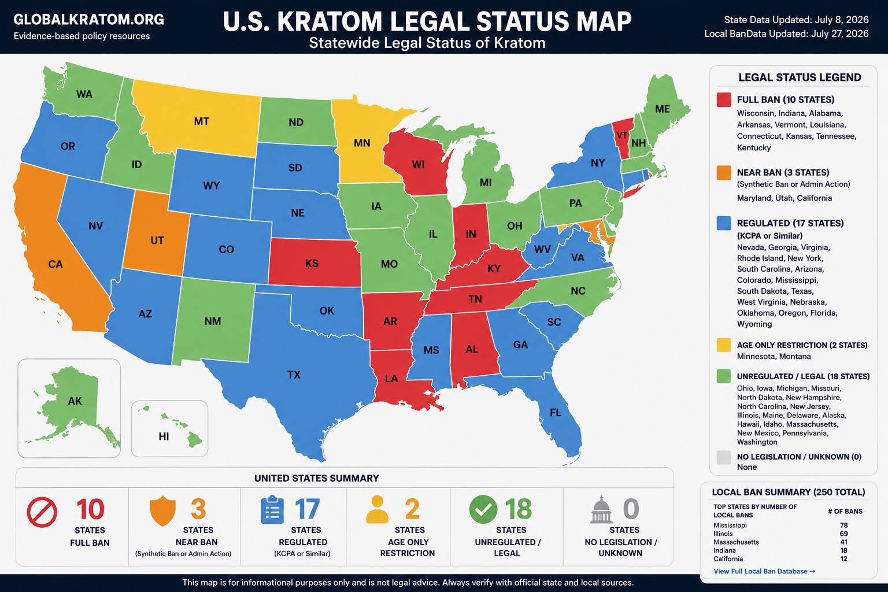

10States with full bans
3Near-ban states
17Regulated states
2Age-only states
251Local jurisdictions with bans

Static preview shown. The interactive layer activates when this folder is served through a website or local web server.
Full ban
Near ban
Regulated
Age only
Unregulated
States with local bans
| State | State policy | Local bans | Open |
|---|